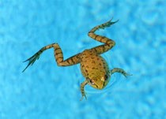
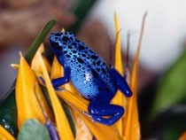

Żaby należą do rodziny płazów. Nie mają ogona, więc mówi się, że są to płazy bezogonowe. Mają około 30 cm długości. Żyją w wodzie i na lądzie. Tylne kończyny są skoczne, dzięki temu żaby są znakomitymi skoczkami. Największa odległość jaką mogą pokonać to 1,5 - 2 m!

Wygląd żaby zmienia się całkowicie w okresie jej rozwoju.
Każdego roku wiosną żaby składają w stawach, jeziorach lub bajorkach od 1000 do 6000 jaj. Jaja żaby nazywają się
skrzek.
Żaby mogą mieć różne kolory. Są też żaby niebieskie.